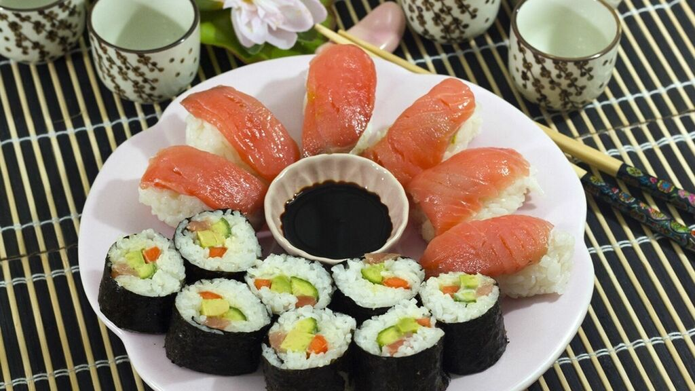
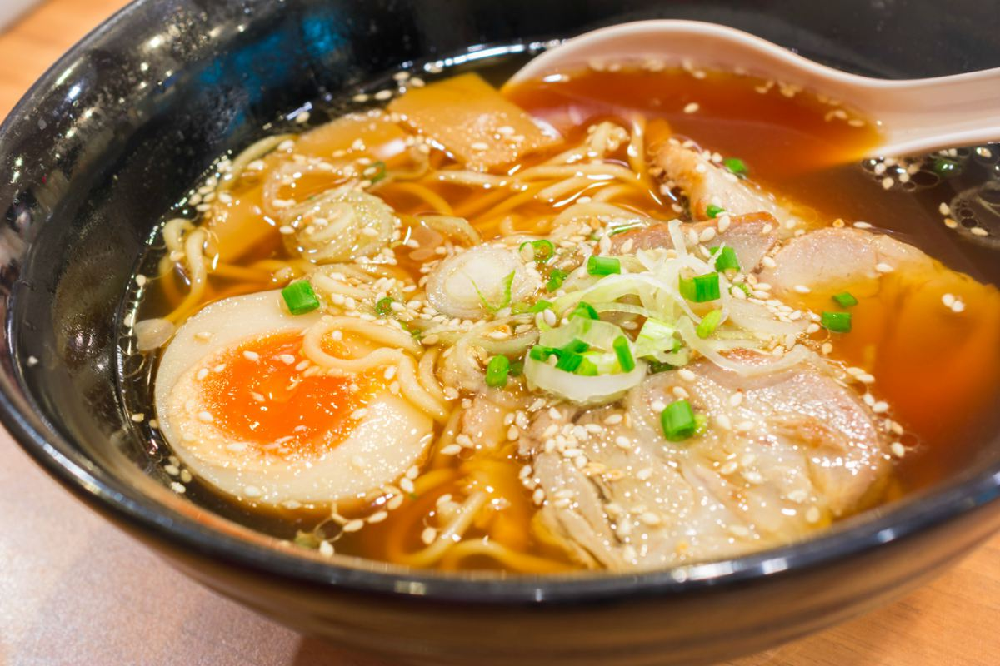
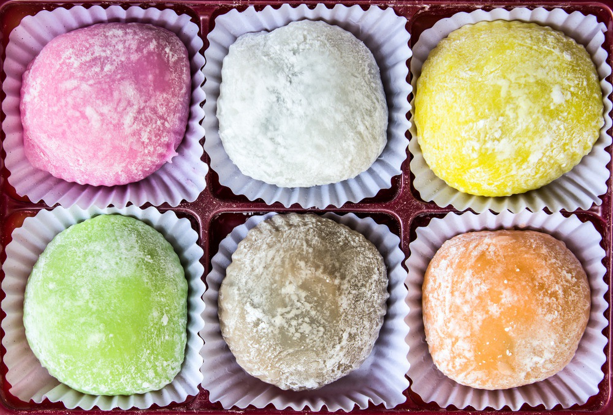

Al tener zonas montañosas, de bosques y de mar unas tan cercas de otras dentro del país, la verdad que la gastronomía que nos ofrece esta ciuadad no decepciona. Platos que se
han hecho conocidos al rededor de todo el mundo, y se hace un espectaculo ver a muchos de sus cocineros preparar estas delicias. Conocidas comidas como el sushi, el ramen, nigiris o las
gyozas. Sin poder olvidar la caracteristica bebida alcoholoca, el sake, o los dulces y suaves mochis, son algunas de las cosas que podras comer aquí.


